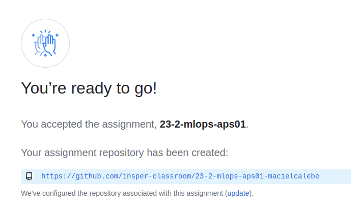

Standards - Aps01 - Part 1
What is the size of a Data Science team? Considering data analysts, data engineers, data scientists, machine learning engineers, it is not uncommon for the professional count to reach hundreds. Across industries, companies are building larger data science teams more and more.
So let's assume that the odds are high that you won't work alone on a data team. Imagine if each professional developed their models in a completely different way, without any:
- Language standards
- Libraries standards (which libraries and which versions)
- Code organization standards
- Concerns about the resources needed to deploy the models.
It is certain that this team will have difficulties in generating business value from ML!
In this activity, we will work on producing a repository template, defining standars that should be used on future projects. Let's assume that git is used for code versioning.
Accept assignment
All assignments delivery will be made using Git repositories. Access the link below to accept the invitation and start working on the first assignment.
Important
You should have received a new private repository. Copy your repo address below. It will be used in the rest of the guide.

Atention
Please note that APS 01 is divided into two assignments! The link to the second part will be available later in the part 2 handout!
Configure assignment repository
The supporting code for this activity is public in the repository APS 01 MLOps. In this guide we will configure your private repository to go along with this public repo.
To get started, create a new folder for your delivery repository and initialize an empty repo:
First let's add the remote repository of support files and download the main branch (which contains this semester's files)
Now let's add the repository of your assignment and send the support code:
Attention!
In the next command, replace your_private_repo_address with the URL of your repository (SSH or https) created for this part of the activity.
With that you should already have your local repository configured and pointing to two remote repositories:
- insper: this repo contains all support code for aps01. It is shared across the room and no one is allowed to push it.
- aps: this repo is yours alone and contains your work only. It will have only the modifications made by you.
You can check that everything worked by running git branch -avv.
Let's start by downloading the news from the support repository:
Let's then embed the news in your local repository and push the new files to your private repo.
Configure dev environment
Use a tool of your preference to create an isolated Python environment.
Important!
Remember to add your env folder (mlops in the example) to .gitignore
Task 01: Opening
Check the content of the aps01 repository. Install the notebook package of your preference and open the notebook.
You you notice that everything was done in a single notebook. Data proccessing, analysis, model construction, etc.
Question 1
Question 2
Answer
To understant more about the data and model, access the links avaiable at the end of the notebook.
Question 3
Answer
The target variable is deposit.
There are those who defend the software production inside notebooks. There is even the area of NDD (Notebook-Driven Development). It works when done right, but let's stay away from these people and take a more classical approach!
Task 02: Organizing
Now you must configure the repository according to some standards. Let's create specific folders for each type of resource used in the project.
Think that all the repositories of the company should follow this organization pattern.
Question 4
Question 5
Task 03: Split notebook code
Every code on this project is on a single notebook. We are going to split it considering the different functionalities provided.
Question 6
Leave in the notebook only code for data exploration.
Task 04: Prediction
Once the training algorithm, features and hyperparameters have been chosen, the final model to be deployed can be trained with a more complete set of data (and not just X_train). We will ignore this fact for now!
Also, when the model is in use (making predictions), the target variable is not needed or does not exist. That is, we need specific data and scripts for prediction.
In this activity, consider that whenever training needs to be redone, there will be a bank.csv file with updated data in the data folder.
Question 7
At this point, you have a repository: - With well-organized folders - With specific code files to train a model - With specific code files to use a model to make predictions
Task 05: Readme
Question 8
Task 06: Dependencies
Question 9
Question 10
Answer
In production deployment, it's a good idea to track dependencies to maintain stability and reliability. Besides that, in some companies your will run in a cluster (spark) where all data scientists and machine learning engineers must to use the same library versions.
Important!
From now on, we will develop part 02 of APS 01!
Release APS01 Part 1!
It looks like you have completed the activities for the first part of the APS, so it's time to do the release!
In this APS, we will use an automatic correction server.
Webhook configuration
Go to the activities repository on GitHub and access the settings (e.g., https://github.com/insper-classroom/24-2-mlops-aps01-pedrods/settings). In the left menu, choose the Webhooks option and then the Add webhook option.
You will need to fill in:
- Payload URL:
http://xxxx.com/yyyGo to Blackboard to get the URL! - Content type:
application/json - Secret: leave it empty!
- SSL verification: check
Enable SSL verification - Which events would you like to trigger this webhook?: Choose
"Let me select individual events"and then:- Check ONLY the OPTION:
Branch or tag creation
- Uncheck the OPTION:
Pushes
- Check ONLY the OPTION:
- Finally, leave the
Activeoption checked.
[...]
With this, your repository can now be tested automatically!
Test Release
With the repository cloned on your machine, open the terminal and launch any tag.
Info!
We will (intentionally) launch a tag for a non-existent activity!
Now, open the terminal in the root of the repository and type the following commands:
Attention!
Make sure you are sending the tag to the correct remote.
If git branch -avv returns something similar to:
Then, push tag aps99.1.1 to aps remote:
If git branch -avv returns something similar to:
Then, push tag aps99.1.1 to origin remote:
Go to your repository
Access the issues tab of your repository on GitHub. You should find a response from the test, informing you that the activity does not exist!
Click on the issue to see an example of automatic feedback.
Info!
The creation of the issue indicates that our tag creations are triggering the test server!
Now, for real!
Tip! 1
If you need to create a new tag, increase the last number:
aps1.1.2aps1.1.3
To do! 11
Update README.md
Now we will update the README.md to show the current status of the tests in your repository. Edit your README.md and add an API call at the beginning, providing your GitHub username.
Attention!
Access Blackboard to find the API arguments!
An Example: